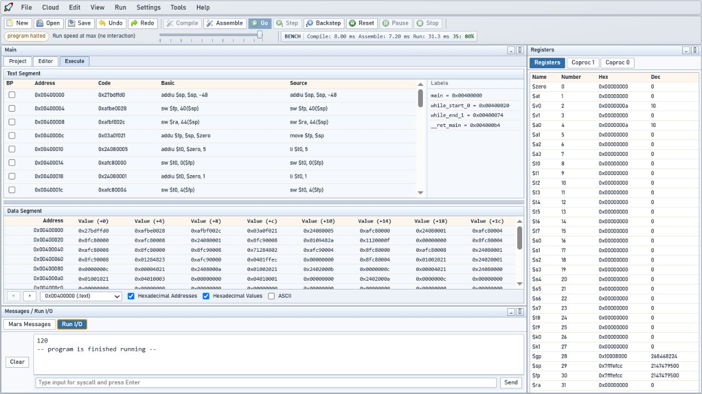

Do código à execução, no mesmo espaço
Monte MIPS, execute um programa e observe o estado que ele altera. Use o mesmo ambiente nas primeiras instruções e em projetos com vários ficheiros.
Abra. Execute. Compreenda.
Um ambiente gratuito para aprender MIPS no browser. Escreva assembly, observe registos e memória, recue na execução e explore Mini-C — sem instalar Java.
Gratuito e open source · Trabalho local sem conta

Monte MIPS, execute um programa e observe o estado que ele altera. Use o mesmo ambiente nas primeiras instruções e em projetos com vários ficheiros.
Explore a stack, a memória, os dispositivos e um Pipeline Lab separado com cinco estágios. A execução funcional e o timing do pipeline são modelos distintos.
Partilhe links permanentes de exemplos e publicações com revisão fixa. Os alunos podem editar, executar e descarregar localmente sem criar conta.